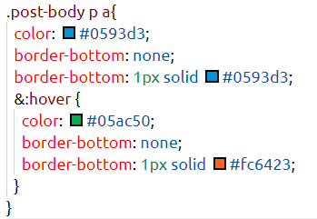
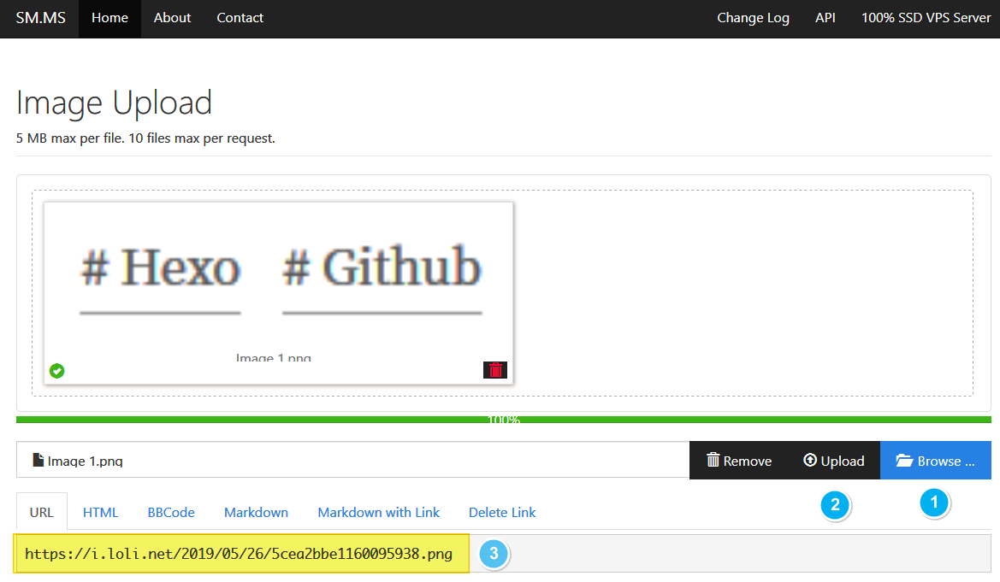
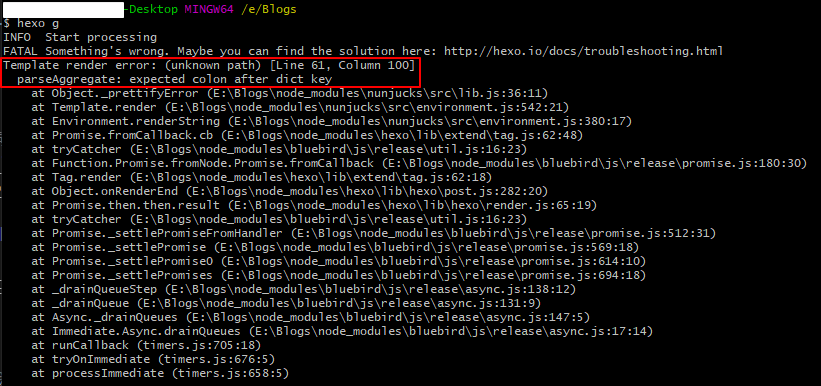

由于个人强迫症，希望将自己值得记录下来的东西通过一种合理的方式进行记录。于是选择了搭建个人博客的方式来实现。通过知乎和面向Google编程后发现利用hexo和github pages来搭建个人博客的方式，最适合我这种穷学生折腾。
搭建博客基本框架
准备工作
在搭建之间，需要先安装以下应用程序和注册相应账户以满足依赖项：
- 安装Node.js
- 安装Git
- 安装Hexo
- 注册Github账号
上述步骤最好依次进行，并可参考相应链接，避免踩坑。相应教程在下节给出。
值得说明的一点是，虽然此搭建博客的方案基本免费，但希望根据个人需求来进行选择。若除开博客功能外不再使用Github其他功能，专门注册账户来实现博客搭建而导致资源浪费，个人不太推崇。若自己想更安全更自由的搭建方式，个人建议注册相应域名。
搭建教程
个人在搭建过程中参考了以下搭建教程，在此感谢前人铺路。并且发现官方技术支持文档基本上是新手最好的参考文档了，在此给出中文参考链接。
- 超详细Hexo+Github博客搭建小白教程:按照此教程，基本能搭建好初步框架。并且其中还有部分骚操作，比如插入网易云音乐播放链接等。可主要依靠此教程完成大致搭建工作。
- Hexo与Github搭建个人博客:知乎这篇博文与上一个教程可相互补充，此博文为辅。
自定义博客内容
博客功能添加
在搭建完博客的基本框架后，可以对以下内容进行自定义：
添加标签、分类、目录
参考官方链接。
添加文章阅读次数
基于LeanCloud进行设置，参考官方链接。
添加评论
由于个人比较喜欢github的评论系统风格，又查阅相应参考链接，gitalk是可以避免被墙、速度较快的评论系统。故添加第三方服务gitalk来实现评论系统。其主要的配置过程可参考Next官方链接。
其中个人遭遇了未找到相关的 Issues 进行评论，请联系@XXXXX初始化创建的问题，通过官方issue找到了原因，是因为没有对评论系统进行初始化。当然可能还存在其他问题，在此给出官方issue链接,如遇到相应问题，可首先查看此链接排除。
添加搜索、音乐外链播放器
尚未进行，后续有空填坑。
修改文章链接文本样式
修改文件 themes\next\source\css\_common\components\post\post.styl，在末尾添加如下css样式：
1 | // 文章内链接文本样式 |
其中相应的颜色可以自己定义，利用vscode还可以直观看到相应的颜色显示效果

添加字数统计和阅读时长功能
从Hexo的Next主题6.0.0版本开始，其默认通过插件hexo-symbols-count-time来实现字数统计，通过git bash定位到博客根目录(如E:\Blogs)下后根据以下命令安装上述插件：1
npm install hexo-symbols-count-time
注：有教程是安装
hexo-wordcount来实现字数统计功能，但是需要修改太多东西，较为繁琐，最好和官方一致，并且只需要简单配置即可。故个人建议使用Next主题默认的hexo-symbols-count-time插件来实现上述功能。如需利用hexo-wordcount来实现，可参考此链接。
然后需要修改主题配置文件和站点配置文件：
- 修改站点配置文件
hexo _config.yml：1
2
3
4
5symbols_count_time:
symbols: true # 文章字数
time: true # 阅读时长
total_symbols: true # 所有文章总字数
total_time: true # 所有文章阅读中时长
此文件为博客显示的基础配置，修改后需要重启服务才能更新博客内容。
- 修改主题配置文件
next _config.yml:1
2
3
4
5
6symbols_count_time:
separated_meta: true # 是否换行显示 字数统计 及 阅读时长
item_text_post: true # 文章 字数统计 阅读时长 使用图标 还是 文本表示
item_text_total: false # 博客底部统计 字数统计 阅读时长 使用图标 还是 文本表示
awl: 4
wpm: 275
具体字段含义可查看官方链接.
修改标签样式
NexT主题下，默认的标签样式是这样的：

我们可以通过修改themes/next/layout/_macro/post.swig文件中的以下片段实现标签样式的修改：1
2
3
4
5
6
7
8<footer class="post-footer">
{% if post.tags and post.tags.length and not is_index %}
<div class="post-tags">
{% for tag in post.tags %}
<a href="{{ url_for(tag.path) }}" # {{ tag.name }}</a>
{% endfor %}
</div>
{% endif %}
只需要将其中的#修改为<i class="fa fa-tag"></i>即可实现以下标签样式：

修改代码高亮样式
在Next主题下，修改代码高亮样式通过修改主题配置文件themes/next/_config.yml中找到以下代码段修改highlight_theme字段实现：1
2
3
4# Code Highlight theme
# Available values: normal | night | night eighties | night blue | night bright
# https://github.com/chriskempson/tomorrow-theme
highlight_theme: normal #可修改为night模式
各种主题的显示效果可查看此链接
公式支持
此处主要参考NexT官方链接对MathJax进行配置，主要分为以下两步：
打开NexT内部数学公式渲染引擎
找到主题配置文件_config.yml中的MathJax Support字段，将其中的enable设为true，便打开了MathJax渲染引擎。
若想使用其他数学公式渲染引擎也可以，参照官方链接进行。此处不再赘述。
打开hexo渲染器
进入博客所在根目录，利用cmd安装以下功能插件：1
2npm un hexo-renderer-marked --save # 卸载hexo-renderer-marked
npm i hexo-renderer-pandoc --save # 或者 hexo-renderer-kramed
然后启动服务器：1
$ hexo clean && hexo server
进行公式测试。如果出现错误，可查看官方链接进行解决。
还可以参考此链接配置数学公式支持功能。
修改公式显示比例
由于部分公式较为复杂，可能同一公式里会出现字母重叠情况，此时可以对next\layout\_third-party\math\mathjax.swig中的MathJax.Hub.Config内容进行修改，可以实现显示比例的缩放：1
2
3
4
5
6
7
8
9
10
11
12
13
14
15MathJax.Hub.Config({
extensions: ["tex2jax.js"],
jax: ["input/TeX", "output/HTML-CSS"],
tex2jax: {
inlineMath: [ ['$','$'], ["\\(","\\)"] ],
displayMath: [ ['$$','$$'], ["\\[","\\]"] ],
processEscapes: true,
skipTags: ['script', 'noscript', 'style', 'textarea', 'pre', 'code']
},
"HTML-CSS": {
availableFonts: ["TeX","STIX"],
scale: 110,
showMathMenu: false
}
});
其中HTML-CSS下的scale字段便是缩放比例,此处个人设置为110%。有关MathJax详细的配置方法请见官方链接。
博客功能配置和美化参考链接
相应的参考博客链接如下：
- Hexo 搭建个人博客系列：主题美化篇：2018.11.20更新，有关动态背景、看板娘、页面加载进度条、鼠标点击效果等。
- Hexo的NexT主题个性化教程：打造炫酷网站
- Hexo使用攻略-添加分类标签和搜索功能
- Hexo使用攻略-添加分类及标签
- Hexo的Next主题开启文章目录和调整样式:Next主题下和默认主题添加文章目录的方式不太一样。
- Hexo官方网站
- Hexo—如何设置文章目录(TOC)
- Hexo Next主题开启字数统计及阅读时长
- Hexo + Next 折腾小记：有关于字体、图片边框、社交链接居中显示、文章目录隐藏、代码高亮样式修改等。
- hexo - Next 主题添加评论功能：使用Valine评论系统
- 为Hexo博客默认主题添加目录
博客写作注意事项
插入图片
在Hexo博客中插入图片有两种方式：
本地引用
绝对路径:
当Hexo项目中只用到少量图片时，可以将图片统一放在source/images文件夹中，通过markdown语法访问它们。这种引用方式下引用的图片既可以在首页内容中访问到，也可以在文章正文中访问到。1

相对路径:
图片也可以采用相对路径，即在文章所属的文件夹中，从而使用相对路径来访问。文章的目录通过配置_config.yml来进行生成。1
post_asset_folder: true
将_config.yml文件中的配置项post_asset_folder设为true后，执行命令:1
hexo new post_name
在source/_posts中会生成文章post_name.md和同名文件夹post_name。将图片资源放在post_name中，文章就可以使用以下markdown语法来利用相对路径引用图片资源：
1

image.jpg的绝对路径为：E:/Bolgs/source/_posts/post_name/image.jpg,但与post_name.md是在同级目录文件中，故可使用上述相对路径进行插入。
上述引用方法存在一个缺陷：图片只能在文章中显示，但无法在首页中正常显示。
如果希望图片在文章和首页中同时显示，可以使用标签插件语法。
1
{ % asset_img image.jpg This is an image % }
不过目前个人觉得在文章中显示图片是最重要的，为方便起见，采用相对引用方式足矣。
CDN引用
除了在本地存储图片，还可以将图片上传到一些免费的CDN服务中。比如Cloudinary提供的图片CDN服务，在Cloudinary中上传图片后，会生成对应的url地址，将地址直接拿来引用即可。
若是无关紧要的图片，也可以使用一些免费图床来生成url地址，直接进行引用。比如免费图床sm,只需要选择本地图片upload至该界面，即可生成链接，如下图：

其中第三步所得到的便是url链接。
参考链接: Hexo博客写作之插入图片
踩过的坑
npm安装出现low severity vulnerabilities
由于部分包的版本问题，在安装某些插件时(比如hexo搜索功能插件)，在Git bash中会出现以下错误：
2
3
4
5
+ hexo-generator-search@2.4.0
updated 1 package and audited 12499 packages in 14.805s
found 5 low severity vulnerabilities
run `npm audit fix` to fix them, or `npm audit` for details
low severity vulnerabilities直译过来便是低严重漏洞，可以尝试执行npm audit fix进行修复，但我执行后还是有类似错误。所以查询官网资料后发现需要手动更新相应的包，输入npm audit可知哪些包需要升级，其中示例如下：
根据官网资料中这段话可知包的名称是什么：
For example, if the path to the vulnerability is @package-name > dependent-package > package-with-vulnerability, you will need to update dependent-package.
npm更新包的方法为:1
npm update -g <pachage>
故此处只需要执行命令npm update -g request即可更新request包。若还有其他需要更新的包，重复上述操作即可。
hexo g中出现template render error
自己在写博客的过程中，遇到了上述问题。经github相关问题得知，该错误出现的原因是：md文件中所插入的公式里包含两个花括号{{}}，而jekyll和hexo都会解析这个样式，从而导致出错。以下是个人在执行hexo g时所出现的错误截图：

官方解决方法
官方所给出的解决方式是:
1 | {% raw %} |
即在公式前后插入相应的模块：1
2
3{% raw %}
$${X_k} = \{{x_1},{x_2},...,{x_n}\} $$ //代码段
{% endraw %}
但一篇博客动辄公式十几个，自己添加起来费神费力，虽然有人写了python脚本,但经过测试后，并不能自动添加raw tag，希望在后期的hexo中可以解决上述问题。
权益之计
由于个人在hexo和Jekyll这两个框架中来回倒腾，发现这两个框架分别是使用的nunjunks和liquid这两个模板引擎，二者均对markdown中的{{、}}、{%、%}、{#、#}字符进行动态解析(非专业人士，可能表达有误)，然而我们并不希望发生这样的事。
一个权宜之计是，将上述字符中添加空格，至少这种方式在公式中是可以正常解析的，并且也避免了模板引擎nunjunks或者liquid对上述字符进行动态解析。个人目前采用的是此种方法。因为可以使用vs code等任一一款文本编辑器快速查询和替换嘛。
若使用的hexo框架，另外一个方法是修改nunjunks中的模板标签，这个是偶然在一个博客中看见的解决方法。通过直接修改nunjucks模板的源代码来避免上述冲突，还需要修改依赖于nunjunks的其他插件，比如hexo-generator-search这个插件，通常是用于搜索，比如本站的搜索功能。具体情况和修改方式可点击博文链接进行查看,此处不再赘述。
结语
这篇博文是自己搭建的记录和参考网站汇总。也是望后来者可以少踩坑。后续将会更新其他类型文章。